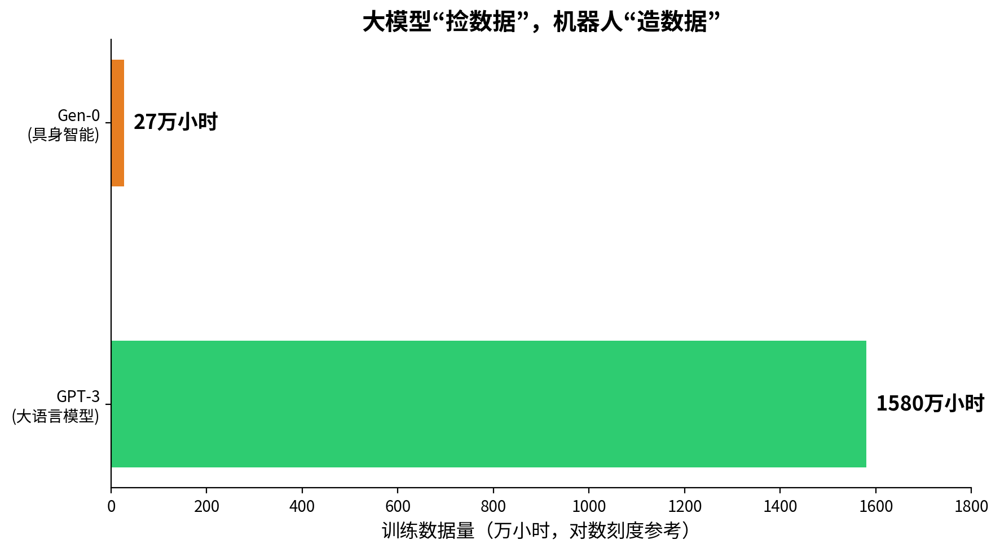

为什么机器人比大模型更难"喂饱"？
核心判断：大语言模型靠"捡数据"长大，具身智能必须"造数据"生存。这一字之差，决定了机器人比大模型难了不止一个数量级。
一一份尴尬的成绩单
先看一组数据。
据国金证券研究报告，要训练具备实际应用能力的具身智能模型，行业至少需要 1000 万小时 的多模态交互数据，而当前全球积累的数据量尚不足需求的 5%。

具体到中国市场，京东云产品经理蔡晨给出更直白的判断："完成一个高质量模型的训练，至少需要一千万小时量级的数据，当前市场上成熟的具身智能数据集只有几十万小时。"
与此同时，复旦大学教授张立华透露了一个供需鸿沟：全球研发端对高质量数据的需求约为 120 万小时，而全行业每月数据产出量仅为 25 万—30 万小时。
二大模型的"免费午餐"，为什么机器人吃不到
大语言模型和具身智能的根本差异，可以归结为一句话：
互联网上的文本和视频，本质上都是"观察者视角"的静态记录。你写一段文字、拍一段视频，不需要同时记录手腕的扭矩、指尖的触觉压力和关节的角速度。大模型要学的规律也相对单纯：给定前面的词元，预测下一个词元。文本自己就是自己的标签，互联网上任何一段文字天然包含着可供学习的因果关系。
但机器人面对的是完全不同性质的东西。一个符合要求的抓取动作数据，不仅要包含视觉信息，还应包含实时的力反馈、触觉感知以及电机扭矩的连续变化。这些模态各异、采样频率不同的信号，还必须在同一个时间基准上严格对齐——视觉看到的那一帧，必须对应上触觉感受到的那一次挤压，再对应上电机输出的那一组力矩。任何一路信号错位几毫秒，这条数据就可能沦为噪声。

更关键的是：互联网上几乎不存在现成的、能够直接映射到机器人感知与控制链路上的"多模态指令—动作"数据集。正如张立华所说：
"我们面临的不是数据的优化，而是从零开始的原始积累。"
三数据采集：一场"苦力活"的经济学困境
具身数据的生产，目前主要靠一条极其笨重的路径：真机遥操作。
操作员操控主机械臂，远程控制实体机器人完成动作，同步记录全套传感数据。问题是，这个过程又慢又贵又累。
人民日报旗下媒体记录了一位苏州采集员的真实经历："同样的动作要重复成千上万次。如果动作被系统判定不合格，相当于白做了。这些动作必须非常缓慢，胳膊要一直悬在空中慢慢移动，动作快了就采集不到数据。戴一整天下来，脑袋疼得厉害，胳膊也酸得不行。"

成本层面，传统遥操作数据采集的单条有效数据成本约 10 至 50 元，而训练一个基本可用的机器人操作策略通常需要数万到数十万条数据。这意味着，光数据采集一项，成本就可能高达百万甚至千万级别。
四一个致命的结构性问题：数据不能"通用"
如果仅仅是"贵"和"慢"，也许还能靠砸钱和时间解决。但具身数据有一个更深层的困境：
在大语言模型领域，词元（Token）是通用的。无论你用 GPT 还是 Claude，文本的表示方式基本一致，数据可以在不同模型间自由流动。
但在具身智能领域，数据具有极强的硬件依赖性。一个身高 1.2 米的机器人采集的抓取数据，很难直接迁移到 1.8 米的机型上——即便抓取同等高度的物体，机械臂的运动行程也完全不同。
"无法让一份数据发挥十份的效能，是具身智能数据短缺的一个重要因素。"
这导致了一个恶性循环：每换一种机器人构型，就要重新采集一套数据。数据越来越碎片化，规模效应难以形成。
五行业正在"想办法"，但每条路都不好走
面对数据困局，行业主要探索三条路径，但每一条都有明显的代价：
真机遥操作：精度最高，数据质量最好，但成本大、效率低，无法规模化。
仿真数据：成本低、可批量生成，但存在"仿真到现实"的迁移鸿沟。有专家认为真实数据与仿真数据的比例可达 1:9，但仿真数据在物理精度上的不足，可能让模型学到"错误的手感"。
无本体采集：操作员穿戴轻量化设备在真实场景中采集，成本可降至传统真机遥操作的三分之一甚至更低。觅蜂科技的目标是达到千万小时级规模，但目前仅到百万小时级别。
更深层的问题在于标准化缺失。CCF YOCSEF 论坛上，专家们指出：企业自定义格式仍占据主流，不同采集主体生产的数据格式、标注规则不统一，数据孤岛严重，行业缺乏推动标准化的核心动力。
六这对 ROS 2 学习者意味着什么
回到我的 ROS 2 学习经验，有一个值得思考的关联点：
一个数据采集节点，如果在运行时能够动态调整采样频率、传感器配置、数据记录精度，就能根据任务场景灵活优化数据产出。Launch 文件的多节点编排能力，则可以统一管理采集、清洗、标注的流程。
具身智能的数据困局，短期内靠"多采"解决不了，更需要"巧采"。而能用参数系统精细调控采集流程的工程师，恰恰是当前机器人数据基础设施建设中最缺的那类人。
结语
大语言模型的成功，建立在互联网二十年"免费沉淀"的文本之上。具身智能没有这样的遗产。
2026 年被业界称为"具身智能数据元年"，行业正从算法驱动转向数据驱动。但数据缺口从"十万"到"千万"的量级差距，不会因为一句口号而消失。谁能率先填平这道鸿沟，谁才有可能等到机器人的"ChatGPT 时刻"。